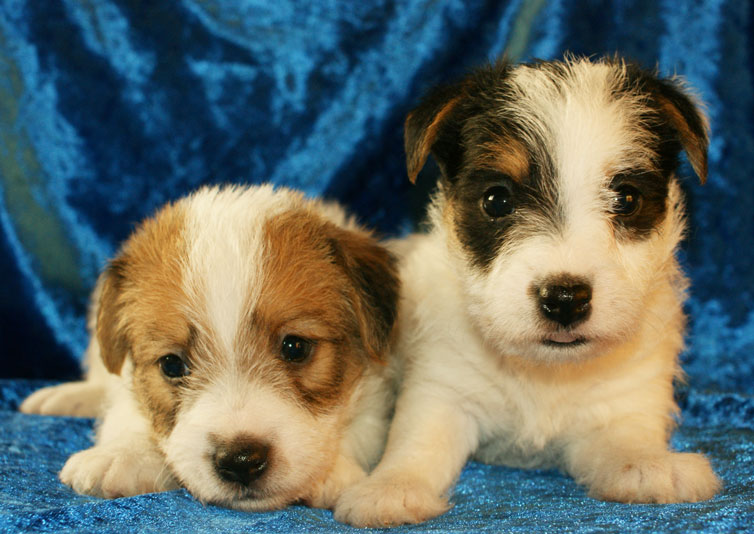

 10.12.2011 - National dogs show in Nowy Dwór Mazowieckim
10.12.2011 - National dogs show in Nowy Dwór Mazowieckim
 20.11.2011 - International dogs
shows in Kielce
20.11.2011 - International dogs
shows in Kielce
HEARTBREAKER - CAC, CACIB, BOB
MICHELLE MA BELLE - CAC, Res.CACIB
debiutuj¹cy GUNS N' ROSES - Best Baby
 25.09.2011- Eu.D.D.C.
in lovely Moritzburgu HEARTBREAKER Balao - V 1
25.09.2011- Eu.D.D.C.
in lovely Moritzburgu HEARTBREAKER Balao - V 1
JAROD Balao - V 4

18.09.2011 - Great Dane Club Show in £ódŸ JAROD Balao - CAC, MICHELLE MA BELLE oraz HEARTBREAKER Balao - II excellent. Olmast 8 years old OH MY DARLING was showed in champion class and gaind IV place, as also her doughter KALLOO LILIROSE showed in open class.

10.09.2011 - Next French Buldogs generation was born. This time also ony two pups.
M: Ch.Md., Ch. Bg., Grand
Ch.Bg NOIR NOTE Balao
O: rozpczêty M³.Ch.Pl., Ch.Pl oraz Int.Ch. ELWIN Baflo

09.09.2011 - First LOLITA's litter. Six males and only one female. All pups are tan -white, smooth or broken coat.
 08.09.2011 -
Smooth coat litter was born. The Parens are FIRST FLASH z Jerene x
Stjarnlindes Jack LOREDANA
08.09.2011 -
Smooth coat litter was born. The Parens are FIRST FLASH z Jerene x
Stjarnlindes Jack LOREDANA

04.09.2011 -
National Dog Show in Przemyœl - LOVE STORY Balao - CAC. BOS,
BOB,
II BOG

21.08.2011 - National Dog Show in Toruniu - LOU LOU BLUE Balao - CAC, BOS, BOB

01 - 06.08.2011 - We had lovely week in Albena and we have few new Georgia, Moldova and Bulgaria champions.

30 - 31.07.2011 - 2 x Cacib in Constanta - Pretorium I'M CEEANNE had finished Romanian Championship

27.07.2011 - Very colorfull litter "G" was born. The parents are MICHELLE MA BELLE Balao x EQORIKANCHA de la Benjamine. We were waiting for black - blue litter, but we also got four lovely fawn surprises :)
 17.07.2011 -
International Dog Show in Warszawa - FOR YOU BALAO Magor
- CAC, CACIB, BOB
17.07.2011 -
International Dog Show in Warszawa - FOR YOU BALAO Magor
- CAC, CACIB, BOB
22.05.2011 - National Dog Show in Radomiu - FOR YOU BALAO Magor again CAC, BOS, BOB.
TIME FOR PLEASURE Balao - JCAC, Best Junior

21.05.2011 - National Terriers Show in Radom - FOR YOU BALAO Magor CAC, BOS, BOB and IV BIS.
TIME FOR PLEASURE Balao - JCAC, Best Junior

08.05.2011 - International dog show in £ódŸ - JAROD Balao - CAC, CACIB, BOB :)
07.05.2011 - International dog show in £ódŸ - JADE Balao, CAC, CACIB, BOB

17.04.2011 - National show in Lublin - next week also KALOO
LILIROSE Balao had finished Championship of Poland :)

09.04.2011 - National dog show in Nowy Dwór Mazowiecki -
JAROD Balao - CAC, BOS, BOB. He had finished Champion of Poland

23.02.2011- Litter "X" was born, tan-white males and females will be broken, rough or smooth coat. Father of both litter is Int.Ch. FOR PLEASUARE of the Hunters Pride

18.02.2011- WHOOPIE's last puppies. Four males and only one female. Pups will be broken and rough coat.

23.01.2011 -
National dog show in Kaunas - MICHELLE MA BELLE gaind last CAC neaded to
finished Champion of Lithuania !
JAROD
Balao - CAC, BOS, BOB